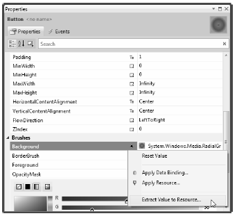
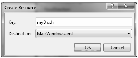
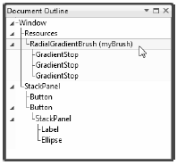
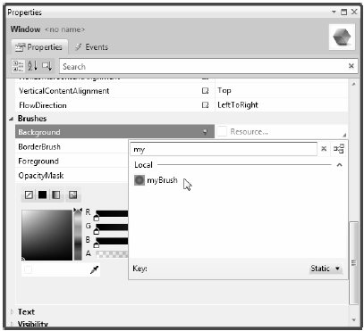
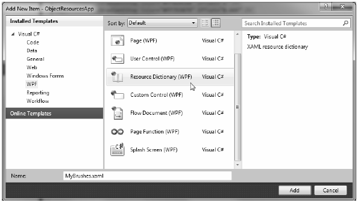
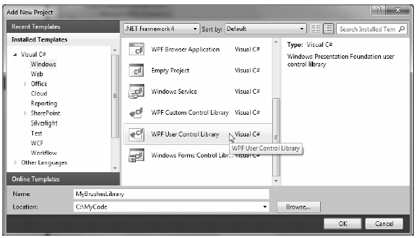
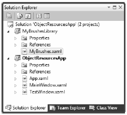
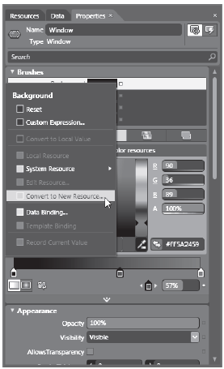
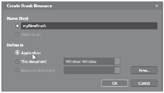
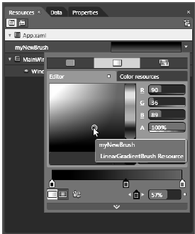

When you are building a WPF application, it is very common to define a blurb of XAML to use in multiple locations within a window, or perhaps across multiple windows or projects. For example, say you are using Expression Blend to build the perfect linear gradient brush, which consists of 10 lines of markup. Now, you want to use that brush as the background color for every Button control in the project...which consists of 8 windows...for a total of 16 Buttons.
The worst thing you could do is to copy and paste the XAML to each and every control. Clearly, this would be a nightmare to maintain, as you would need to make numerous changes anytime you wanted to tweak the look and feel of the brush.
Thankfully, object resources allow us to define a blob of XAML, give it a name, and store it in a fitting dictionary for later use. Like a binary resource, object resources are often compiled into the assembly that requires them. However, you don’t need to tinker with the Build Action property to do so. As long as you place your XAML into the correct location, the compiler will take care of the rest.
Working with object resources is a big part of WPF development. As you will see, object resources can be far more complex than a custom brush. You could define a XAML-based animation, a 3D rendering, a custom control style, data template, control template, and more, and package each one as a reusable resource.
As mentioned, object resources must be placed in a fitting dictionary object in order to be used across an application. As it stands, every descendent of FrameworkElement supports a Resources property. This property encapsulates a ResourceDictionary object that contains the defined object resources. The ResourceDictionary can hold any type of item as it operates on System.Object types and may be manipulated via XAML or procedural code.
In WPF, all controls, Windows, Pages (used when building navigation applications or XBAP programs) and s extend FrameworkElement, so just about all widgets provide access to a ResourceDictionary. Furthermore, the Application class, while not extending FrameworkElement, supports an identically named Resources property for the same purpose.
To begin exploring the role of object resources, create a new WPF application named ObjectResourcesApp using Visual Studio 2010 and change the initial Grid to a horizontally aligned StackPanel layout manager. Into this StackPanel, define two Button controls (we really don’t need much to illustrate the role of object resources, so this will do):
<Window x:Class="ObjectResourcesApp.MainWindow" xmlns="http://schemas.microsoft.com/winfx/2006/xaml/presentation" xmlns:x="http://schemas.microsoft.com/winfx/2006/xaml" Title="Fun with Object Resources" Height="350" Width="525"> <StackPanel Orientation="Horizontal"> <Button Margin="25" Height="200" Width="200" Content="OK" FontSize="20"/> <Button Margin="25" Height="200" Width="200" Content="Cancel" FontSize="20"/> </StackPanel> </Window>
Now, select the OK button and set the Background color property to a custom brush type using the integrated brush editor (discussed in Chapter 29). Once you’ve done so, notice how the brush is embedded within the scope of the <Button> and </Button> tags:
<Button Margin="25" Height="200" Width="200" Content="OK" FontSize="20"> <Button.Background> <RadialGradientBrush> <GradientStop Color="#FFC44EC4" Offset="0" /> <GradientStop Color="#FF829CEB" Offset="1" /> <GradientStop Color="#FF793879" Offset="0.669" /> </RadialGradientBrush> </Button.Background> </Button>
To allow the Cancel button to use this brush as well, we should promote the scope of our <RadialGradientBrush> to a parent element’s resource dictionary. For example, if we move it to the <StackPanel>, both buttons can use the same brush, as they are child elements of the layout manager. Even better, we could package the brush into the resource dictionary of the window itself, so all aspects of the window’s content (nested panels, etc.) can freely make use of it.
When you need to define a resource, you use property element syntax to set the Resources property of the owner. You also give the resource item an x:Key value, which will be used by other parts of the window when they want to refer to the object resource. Be aware that x:Key and x:Name are not the same! The x:Name attribute allows you to gain access to the object as a member variable in your code file, while the x:Key attribute allows you to refer to an item in a resource dictionary.
Visual Studio 2010 and Expression Blend both allow you to promote a resource to a higher scope using their respective Properties windows. In Visual Studio 2010, first identify the property that has the complex object you wish to package as a resource (the Background property in our example). Next to the property, you’ll see a small diamond button that, when clicked, will open a pop-up menu. From here, select the “Extract value to Resource...” option (Figure 30-7).
Figure 30-7 Moving a complex object into a resource container
You are now asked to name your resource (myBrush), and specify where to place it. For this example, leave the default selection of MainWindow.xaml (Figure 30-8).
Figure 30-8 Naming the object resource
When you’re done, the markup will be restructured like this:
<Window x:Class="ObjectResourcesApp.MainWindow" xmlns="http://schemas.microsoft.com/winfx/2006/xaml/presentation" xmlns:x="http://schemas.microsoft.com/winfx/2006/xaml" Title="Fun with Object Resources" Height="350" Width="525"> <Window.Resources> <RadialGradientBrush x:Key="myBrush"> <GradientStop Color="#FFC44EC4" Offset="0" /> <GradientStop Color="#FF829CEB" Offset="1" /> <GradientStop Color="#FF793879" Offset="0.669" /> </RadialGradientBrush> </Window.Resources> <StackPanel Orientation="Horizontal"> <Button Margin="25" Height="200" Width="200" Content="OK" FontSize="20" Background="{StaticResource myBrush}"></Button> <Button Margin="25" Height="200" Width="200" Content="Cancel" FontSize="20"/> </StackPanel> </Window>
Notice the new <Window.Resources> scope, which now contains the RadialGradientBrush object, which has a key value of myBrush.
The other change that took place when we extracted our object resource was that the property that was the target of the extraction (again, Background) now makes use of the {StaticResource} markup extension. As you can see, the key name is specified as an argument. Now, if the Cancel button wishes to use the same brush to paint its background, it is free to do so. Or, if the Cancel button had some complex content, any sub-element of that Button could also use the window-level resource—for example, the Fill property of an Ellipse:
<StackPanel Orientation="Horizontal"> <Button Margin="25" Height="200" Width="200" Content="OK" FontSize="20" Background="{StaticResource myBrush}"> </Button> <Button Margin="25" Height="200" Width="200" FontSize="20"> <StackPanel> <Label HorizontalAlignment="Center" Content= "No Way!"/> <Ellipse Height="100" Width="100" Fill="{StaticResource myBrush}"/> </StackPanel> </Button> </StackPanel>
After you have extracted a resource to the scope of a window, you can locate it in your Document Outline window, which can be opened via the View > Other Windows > Document Outline menu (Figure 30-9).
Figure 30-9 Viewing our resource in the Document Outline
If you select any aspect of the object resource in the Document Outline window, you can change values using the Properties window. Thus, you could change the individual gradient stops, the origin offset, and other aspects of the brush.
It is also possible for a property to use the {DynamicResource} markup extension when connecting to a keyed resource. To understand the difference, name your OK button btnOK and handle the Click event. In this event handler, use the Resources property to obtain the custom brush, and then change some aspect of it:
private void btnOK_Click(object sender, RoutedEventArgs e) { // Get the brush and make a change. RadialGradientBrush b = (RadialGradientBrush)Resources["myBrush"]; b.GradientStops[1] = new GradientStop(Colors.Black, 0.0); }
Note We are using the Resources indexer to locate a resource by name here. Be aware, however, that this will throw a runtime exception if the resource can’t be found. You could also use the TryFindResource() method, which will not throw a runtime error but simply return null if the specified resource can’t be located.
If you run this application and click the OK button, you will see the brush’s change is accounted for and each button updates to render the modified brush. However, what if you completely changed the type of brush specified by the myBrush key? For example:
private void btnOK_Click(object sender, RoutedEventArgs e) { // Put a totally new brush into the myBrush slot. Resources["myBrush"] = new SolidColorBrush(Colors.Red); }
This time, when you click the button, neither updates as expected. This is because the {StaticResource} markup extension applies the resource only once and stays “connected” to the original object during the life of the application. However, if we change each occurrence of {StaticResource} to {DynamicResource} in our markup, we find our custom brush has been replaced with the expected solid red brush.
Essentially, the {DynamicResource} markup extension is able to detect whether the underlying keyed object has been replaced with a new object. As you might guess, this requires some extra runtime infrastructure, so you should typically stick to using {StaticResource} unless you know you have an object resource that will be swapped with a different object at runtime, and you want all items using that resource to be informed.
When you have object resources in a window’s resource dictionary, all items in the window are free to make use of it, but other windows in the application cannot. Give your Cancel button a name of btnCancel and handle the Click event. Insert a new window into your current project (named TestWindow.xaml) that contains a single Button, which, when clicked, will close the window:
public partial class TestWindow : Window { public TestWindow() { InitializeComponent(); } private void btnClose_Click(object sender, RoutedEventArgs e) { this.Close(); } }
Now, in the Click handler of the Cancel button on your first window, just load and display this new window, like so:
private void btnCancel_Click(object sender, RoutedEventArgs e) { TestWindow w = new TestWindow(); w.Owner = this; w.WindowStartupLocation = WindowStartupLocation.CenterOwner; w.ShowDialog(); }
So, if the new window wants to use myBrush, it currently won’t be able to as it is not within the correct “scope.” The solution is to define the object resource at the application level, rather than at the level of a specific window. There is no way to automate this within Visual Studio 2010, so simply cut the current brush object out of the <Windows.Resources> scope, and place it in the <Application.Resources> scope in your App.xaml file:
<Application x:Class="ObjectResourcesApp.App" xmlns="http://schemas.microsoft.com/winfx/2006/xaml/presentation" xmlns:x="http://schemas.microsoft.com/winfx/2006/xaml" StartupUri="MainWindow.xaml"> <Application.Resources> <RadialGradientBrush x:Key="myBrush"> <GradientStop Color="#FFC44EC4" Offset="0" /> <GradientStop Color="#FF829CEB" Offset="1" /> <GradientStop Color="#FF793879" Offset="0.669" /> </RadialGradientBrush> </Application.Resources> </Application>
Now your TestWindow is free to use this same brush to paint its background. If you find the Background property for this new Window, click the “Advanced properties“ square and you can activate the Apply Resource... menu option. You can then search for your application-level brush by typing its name into the Search box. (Figure 30-10)
Figure 30-10 Applying application-level resources
Application-level resources are a good starting point, but what if you need to define a set of complex (or not so complex) resources that need to be reused across multiple WPF projects? In this case, you want to define what is known as a “merged resource dictionary.” This is nothing more than a .xaml file that contains nothing but a collection of object resources. A single project can have as many of these files as required (one for brushes, one for animations, and so forth), each of which can be inserted using the Add New Item dialog box activated via the Project menu (Figure 30-11).
Figure 30-11 Inserting a new merged resource dictionary
In the new MyBrushes.xaml file, we will want to cut the current resources in the Application.Resources scope and move them into our dictionary, like so:
<ResourceDictionary xmlns="http://schemas.microsoft.com/winfx/2006/xaml/presentation" xmlns:x="http://schemas.microsoft.com/winfx/2006/xaml"> <RadialGradientBrush x:Key="myBrush"> <GradientStop Color="#FFC44EC4" Offset="0" /> <GradientStop Color="#FF829CEB" Offset="1" /> <GradientStop Color="#FF793879" Offset="0.669" /> </RadialGradientBrush> </ResourceDictionary>
Now, even though this resource dictionary is part of our project, we will get runtime errors. The reason is that all resource dictionaries must be merged (typically at the application level) into an existing resource dictionary. To do this, use the following format (note that multiple resource dictionaries can be merged by adding multiple <ResourceDictionary> elements within the <ResourceDictionary.MergedDictionaries> scope).
<Application x:Class="ObjectResourcesApp.App" xmlns="http://schemas.microsoft.com/winfx/2006/xaml/presentation" xmlns:x="http://schemas.microsoft.com/winfx/2006/xaml" StartupUri="MainWindow.xaml"> <!-- Bring in the logical resources from the MyBrushes.xaml file. --> <Application.Resources> <ResourceDictionary> <ResourceDictionary.MergedDictionaries> <ResourceDictionary Source = "MyBrushes.xaml"/> </ResourceDictionary.MergedDictionaries> </ResourceDictionary> </Application.Resources> </Application>
Last but not least, it is possible to create .NET class libraries that contain nothing but dictionaries of object resources. This can be useful if you have defined a set of themes that need to be used on a machine-wide level. You could package up the object resource into a dedicated assembly, and then applications that wish to make use of them could load them into memory.
The easiest way to build a resource-only assembly is to actually begin with a WPF User Control Library project. Add such as project (named MyBrushesLibrary) to your current solution, using the Add > New Project menu option of Visual Studio 2010 (Figure 30-12).
Figure 30-12 Adding a User Control library as a starting point for a resource-only library
Now, completely delete the 1.xaml file from the project (the only items we really want are the referenced WPF assemblies). Next, drag and drop the MyBrushes.xaml file into your MyBrushesLibrary project and delete it from the ObjectResourcesApp project. Your Solution Explorer should now look like Figure 30-13.
Figure 30-13 Moving the MyBrushes.xaml file into our new library project
Compile your code library project. Next, reference this library from the ObjectResourcesApp project using the Add Reference dialog box. Now, you will want to merge these binary resources into the application-level resource dictionary of the ObjectResourcesApp project. Doing so, however, requires some rather funky syntax, shown here:
<Application.Resources> <ResourceDictionary> <ResourceDictionary.MergedDictionaries> <!--The syntax is /NameOfAssembly;Component/NameOfXamlFileInAssembly.xaml --> <ResourceDictionary Source = "/MyBrushesLibrary;Component/MyBrushes.xaml"/> </ResourceDictionary.MergedDictionaries> </ResourceDictionary> </Application.Resources>
First, be aware that this string is space-sensitive. If you have extra white space around your semicolon or forward slashes, you will generate runtime errors. The first part of the string is the friendly name of the external library (no file extension). After the semicolon, you type in the word Component followed by the name of the compiled binary resource, which will be identical to the original XAML resource dictionary.
As mentioned, Expression Blend has similar ways to promote local resources to window-level, application-level, and even resource-dictionary-level. Assume you have defined a custom brush for the Background property of the main window and wish to package it as a new resource. Using the Brush editor, click on the (ever so tiny) Advanced Properties button (the small white dot) of the Background property to access the Convert to New Resource option (Figure 30-14).
Figure 30-14 Extracting a new resource using Blend
From the resulting dialog box, you can give your object resource a name and specify where Blend should store it (the current window, the application, or a new merged resource dictionary). Here I have placed myNewBrush at the application level (Figure 30-15).
Figure 30-15 Defining a new application-level resource with Blend
Once you’ve done this, you will see that your App.xaml file has been updated as expected. Also, using the Resources tab (opened via the Window menu) you can modify existing resources using the appropriate editor (Figure 30-16).
Figure 30-16 Modifying existing resources with Blend
That wraps up our examination of WPF’s resource management system. You will make good use of these techniques for most of your applications, as well as during the remainder of the WPF chapters of this text. Next up, let’s investigate the integrated animation API of Windows Presentation Foundation.